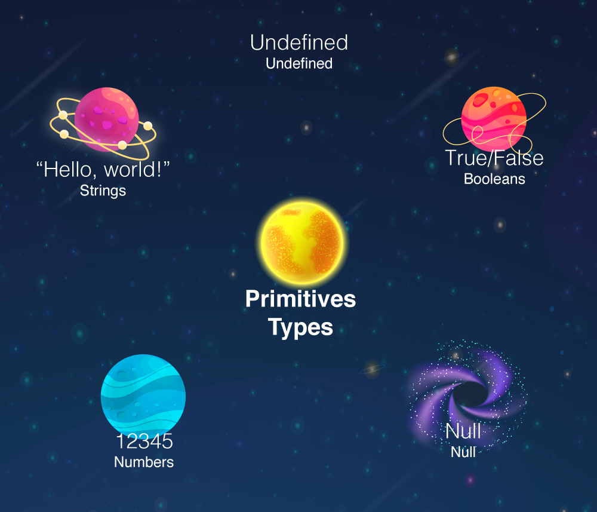
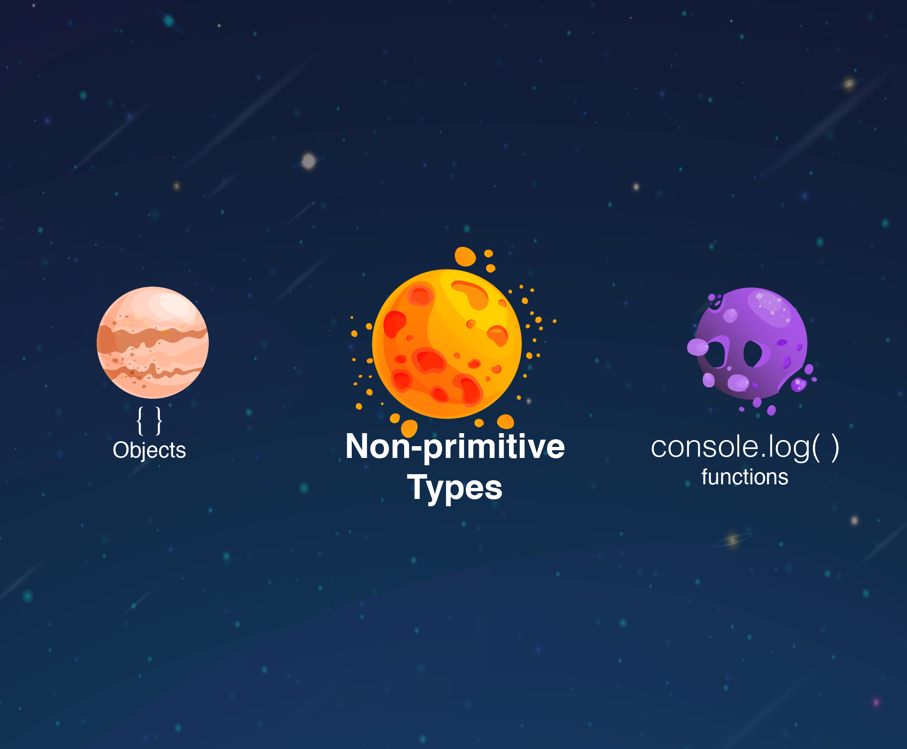

👩🏫 JS Basics 04 - Les types de données
Objectifs
- Vérifier le type d'une expression
Pré-requis
Avoir validé les quêtes suivantes :
Introduction
Dans les quêtes précédentes, tu as découvert ce qu'est Javascript et à quoi ressemble la syntaxe. Tu as également appris comment créer des variables.
Dans cette quête, tu apprendras les différents types de valeurs qui peuvent être utilisés en Javascript. Pour l'instant, nous n'avons utilisé que des chaînes et des nombres, mais il existe de nombreux autres types de données.
C'est parti !
Sommaire
L'opérateur "typeof"
En javascript, on peut utiliser un opérateur appelé "typeof" pour voir le type de données d'une valeur.
Pour ce faire, on peut simplement écrire typeof suivi de la valeur que nous voulons vérifier.
Ouvre la console du navigateur et essaye ce code :
typeof 1;
Tu verras apparaître résultat "number" car la valeur 1 est bien un nombre.
Deux catégories de types de données
En Javascript, il existe sept types de données différents. Ils sont classés en deux catégories : Primitifs et non-primitifs.
Les types primitifs
Une valeur primitive est une valeur qui ne peut pas changer (on dit généralement que ces valeurs sont immutables, qu'elles ne peuvent pas muter).
Pense aux nombres. Tu peux écrire un code comme celui-ci :
let a = 1;
a = 2;
Dans ce code, tu modifies la valeur pointée par a. Mais tu n'as pas modifié la valeur 1. Tu n'écrirais jamais quelque chose comme ça :
1 = 2;
Tu ne peux pas modifier la valeur 1 pour qu'elle devienne 2. Le nombre 1 sera toujours le nombre 1. C'est ce que nous entendons par immutable.

Voici les types de données primitifs :
Boolean
Les booléens sont utilisés pour représenter le vrai (true) ou le faux (false).
typeof true;
// "boolean"
String
Une "String" est une chaîne (suite) de caractères. Les chaînes sont toujours entourées de guillemets doubles ("") ou simples ('') .
typeof "Hello, World !";
// "string"
Number
Les nombres sont une représentation d'un nombre entier ou décimal.
typeof 1234;
// "number"
typeof 12.54;
// "number"
Null
La valeur null est utilisée pour représenter une absence intentionnelle de valeur.
Si tu utilises typeof avec null, tu verras que le type de null est "object" ;
C'est une erreur qui a été implémentée dans l'ECMAScript depuis le début et ne peut plus être corrigée de nos jours.
let empty = null;
typeof empty;
// "object"
Undefined
undefined est la valeur par défaut d'une variable qui existe (car elle est déclarée) mais qui n'a pas encore de valeur (car elle n'a pas été initialisée/assignée).
let notDefined;
typeof notDefined;
// "undefined"
Important
Il est important de comprendre que "undefined" ne s'applique qu'aux variables qui ont été créées, mais qui ne contiennent aucune valeur.
Si tu essaies d'appeler une variable qui n'existe pas (qui n'a pas été déclarée), tu obtiendras une ReferenceError, ce qui n'est pas du tout la même chose.
let notDefined;
console.log(notDefined);
// "undefined"
console.log(nothing);
// ReferenceError: nothing is not defined
Comme tu peux le voir, même si le message d'erreur dit "non défini", ce qui peut prêter à confusion, ce n'est pas la même chose que undefined. ReferenceError est une erreur fatale ☠️ qui provoque l'arrêt de l'exécution du Javascript.
Types complexes (non-primitifs)

Les valeurs non primitives sont des valeurs qui peuvent changer (on dit qu'elles sont mutables).
Functions
Une fonction est un bloc de code utilisé pour exécuter un ensemble d'instructions.
On peut exécuter (on dit aussi appeler ou invoquer) une fonction en écrivant son nom suivi de parenthèses.
console.log("hello")
typeof console.log;
// "function"
L'opérateur typeof distingue les fonctions des objets. En fait, une fonction en Javascript peut être considérée comme un type particulier d'objet !
Tu pourras regarder ici quand tu auras le temps pour approfondir cela.
Objects
Nous parlerons davantage des objets dans une autre quête. Pour le moment, saches que les objets sont en quelque sorte des "boîtes" qui peuvent contenir des clés associées à des valeurs, un peu comme dans un dictionnaire où on a des mots associés à des définitions.
Ces paires "clé/valeur" sont entourés d'accolades pour délimiter l'objet décrit.
Les valeurs contenues dans un objet peuvent être de n'importe quel type, cela peut même être des fonctions ! Une fonction contenue dans un objet sera appelée "méthode".
const person = {
name: "Bob",
age: 25,
sayHello: function(){
console.log("Hello");
}
}
person.sayHello();
// "Hello"
typeof person;
// "object"
Array
Les Arrays sont utilisés pour stocker plusieurs valeurs au sein d'une même variable.
const colors = ["Red", "Blue", "Yellow"];
Array n'est pas un type de donnée à proprement parler, c'est un "sous-type" (un cas particulier) du type Object.
typeof colors;
// "object"
🔬 Fais une expérience
Ouvre la console de ton navigateur et utilise l'opérateur typeof sur plusieurs valeurs différentes pour observer le résultat.
Résumé
En Javascript, les types de données sont divisés en deux catégories : les types dits "primitifs" et les types "complexes" (non-primitifs) :
- Les types de données primitifs (immutables) :
- Boolean
- String
- Number
- Null
- Undefined
- Les autres (mutables) :
- Object
- Function
Ressources partagées sur cette quête
- Très bien faithttps://www.pierre-giraud.com/javascript-apprendre-coder-cours/type-donnee/
- Current ECMAScript specificationhttps://tc39.es/ecma262/#sec-ecmascript-data-types-and-values